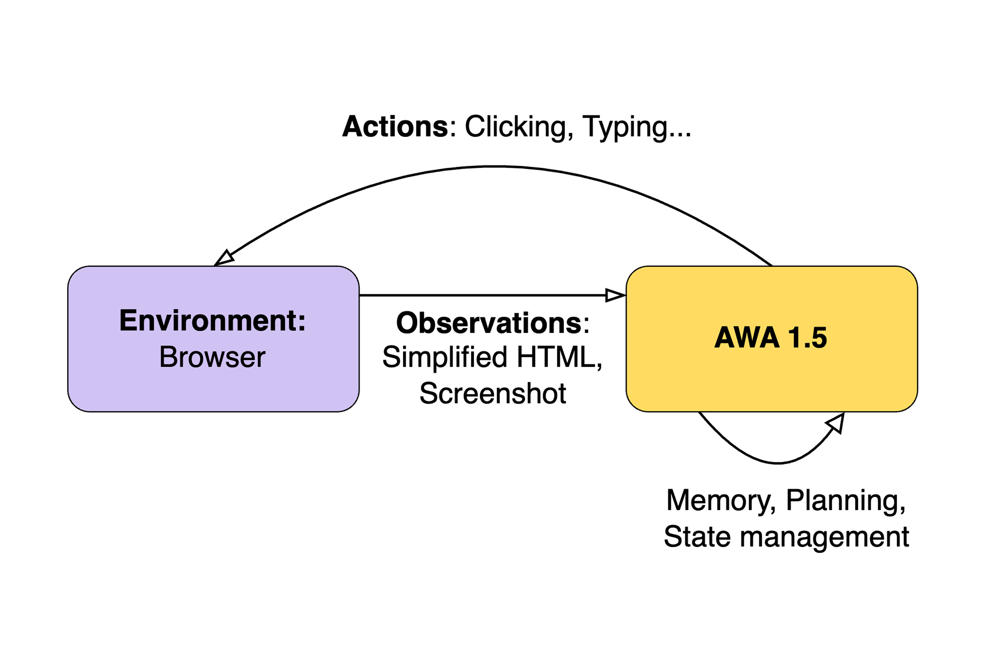

We are thrilled to announce a significant milestone in the field of AI web autonomy. Our Autonomous Web Agent (AWA) 1.5 system has recently achieved a remarkable score of 57.14% on the WebArena benchmark, substantially surpassing the previous record of 35.8%. This achievement marks a significant step towards human-level performance, currently at 78%.
This breakthrough is particularly noteworthy for two key reasons:
- It's the closest any AI system has come to human-level performance on this benchmark.
- WebArena is one of the most realistic and challenging benchmarks in the field of web autonomy.
The Challenge of Evaluating Web Agents
Reliably evaluating the performance of web agents is a surprisingly hard problem. During the development of AWA 1, we realized that comparing web agent performance comes with a set of challenges:
The Web's Inherent Noise
The open web is an inherently noisy environment. Websites change frequently, content updates dynamically, and the pathways to complete a task can vary significantly from one moment to the next. Typical issues are popups or quickly changing sponsored results in search engines. These small changes can be enough to send agents on completely different trajectories.
Stochastic Nature of Agents
By their nature, AI agents can take different approaches to solve the same problem. This stochastic behavior raises an important question: How do we determine if one trajectory is "smarter" or more efficient than another? For instance, is it better to use Google Scholar or arXiv when researching a topic? Both approaches might yield valid results but through different paths. One path might be longer or even lead to a completely different, yet still valid, outcome.
The Stateful Web
Many web tasks are stateful in real life, meaning they change the website's or user account's state. For example the task: “Cancel my latest order” might be a realistic task, but would only work once (or until there are no more orders left to cancel). Other issues often arise with tasks that require a certain execution date (Buy tickets for next weekend’s Taylor Swift concert). Often, tasks also require logins, which may be tricky if the agent retains the logged-in status between a couple of runs but is suddenly asked for 2FA on other test runs.
Ambiguity in Evaluation
Given the variability in web content and agent behavior, how do we objectively evaluate performance? If two websites provide slightly different answers to the same query, is it fair to penalize an agent for choosing one? Human evaluation is expensive, hardly objective and changes over time without strict rules and guidelines. Using LLMs for these evaluations makes things more comparable but leads to different challenges. For example, when models fail on a task, they often try to sugarcoat the results and return incomplete information. In a product, this is great as often users are already satisfied with partial information. In an automatically evaluated benchmark on the other this may lead to a higher score and thus distort the results.
All of these issues compound and led to the observation that repeatedly running the same model over a couple of well-formulated benchmark tasks result in very noisy evaluations.
Enter WebArena: A Solution to Evaluation Challenges
WebArena addresses these challenges by providing a controlled, repeatable environment for testing web agents. Here's what makes WebArena stand out:
- Containerised Sites: WebArena uses containerized websites that can be reset to a known state for each run, ensuring consistency across tests.
- Unambiguous Outputs: WebArena tasks are designed to have clear, singular truthful answers, making evaluation more straightforward.
- Realistic Environments: The benchmark uses "real" sites that useful web agents should be able to navigate, closely mimicking the challenges of the open web.
- Sophisticated Evaluation Methods: WebArena employs a multi-faceted approach to performance evaluation:
- Path checks to ensure correct navigation
- JavaScript locators to verify interaction with specific elements
- Output string matching to confirm task completion
AWA 1.5: Under the Hood
Our AWA 1.5 system represents a significant advancement in web autonomy. Here's an overview of its key features and architecture:
- Human-like Interaction: AWA 1.5 clicks, types, and navigates web pages in a manner similar to human users but at a slightly slower speed to ensure accuracy.
- Custom HTML-DOM Parsing: We use a proprietary system to parse the HTML-DOM and screenshots of web pages, providing our agent with a rich and multimodal understanding of the web environment.
- Action Generation: Based on its understanding of the web page, AWA 1.5 generates a list of actions, which are then executed in order. AWA 1.5 may generate multiple actions at once to allow it to fill out visible forms quickly.
- Iterative Processing: After each action, the system re-parses the page and repeats the process until it determines it has succeeded or failed at the given task.
- State and Memory Management: AWA 1.5 incorporates sophisticated state and memory management between steps, allowing it to maintain context and make informed decisions. Keeping earlier thoughts in memory helps with understanding the current progress of a task. In practice, knowing whether a site is working for AWA is also often helpful. Too little memory can lead to multi-step loops that are hard to break.
- Reasoning and Planning: The system includes components for reasoning about its actions, planning its approach to tasks, and tracking the progress in the plan. After generating a plan, it may also change it on the fly to adapt to new circumstances or instructions.
- User Interaction Capability: While disabled for the WebArena benchmark, AWA 1.5 is capable of interacting with users live, asking for clarification or additional information when needed. If a question can be answered by our manager instance (Jace), the user will not be bothered.

Challenges and Limitations
Despite its strong performance, AWA 1.5 faced several challenges in the WebArena environment:
- Interaction Limitations: Our current version cannot perform drag-and-click actions, making map-based tasks particularly challenging.
- Real-world vs. Benchmark Optimization: AWA 1.5 is optimized for real-world performance and efficiency, sometimes conflicting with WebArena's specific requirements. For example, we might stop a search task earlier than WebArena expects if we've already found the relevant information. AWA 1.5 also tends to use search bars to find relevant results directly. This conflicts with some of the tasks that require navigation via menus (Different paths lead on some websites to different final URLs, which are then checked and marked as failed, even though the same final page is reached). We also imposed a maximum number of steps (after which we failed immediately); this led to a couple of failed tasks but made the runs cheaper and faster.
- Technical Issues: We encountered a couple of technical issues while running WebArena. For example, the self-hosted Reddit alternative, Postmill, heavily rate-limited our agent. Another issue was that the hosted version of OpenStreetMap was broken (we assume this was recently fixed) and did not display any location information after the agent selected them. While our AWA 1.5 often found creative workarounds, for example, just extracting the current coordinates from the URL instead of relying on the missing sidebar, some tasks are simply impossible with this version.
- Parallelism: While WebArena is mostly meant to be run sequentially, we always ran 5-10 tasks in parallel to speed things up. This interferes with a couple of tasks and makes them likely to fail.
- Exact string matching: Some WebArena tasks require exactly matched strings as output. These are often very specific and rarely outright wrong, i.e., requiring “123km” instead of “123 km”. Other tasks require “Yes” or “No”, yet others require a more long-winded enumeration of products; this makes it difficult for an AWA 1.5, designed to produce understandable and helpful answers. While we added some general output rules (cut your answers short, try to answer Yes/No if a question allows it), a number of tasks still failed because of mismatched outputs.
Looking Ahead: AWA 2.0 and Beyond
While AWA 1.5 represents a significant breakthrough, we're already hard at work on AWA 2.0. Our goals for the next generation include:
- Improved reasoning capabilities and general more human-like performance
- Faster execution times
- Advanced action capabilities, particularly for complex website interactions
Conclusion
The achievement of AWA 1.5 on the WebArena benchmark represents a significant leap forward in AI web autonomy. By scoring 57.14%, we've demonstrated that AI is rapidly approaching human-level capability in complex web interactions.
As we continue to refine our technology and push towards AWA 2.0, we're excited about the potential applications in personal digital assistance, data collection and analysis, and enhanced web accessibility.
AWA 1.5 is currently available on jace.ai. We are continuously adding more people to jace from our waitlist each week. Together, we're moving towards a future where AI agents can seamlessly assist and augment human interaction with the digital world.
Stay tuned for more breakthroughs as we continue our work on AWA 2.0 and beyond. The future of web interaction is autonomous, and it's closer than ever before.
References
Please take a look at webarena.dev for the leaderboard, paper and further information on WebArena!